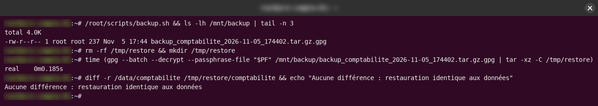
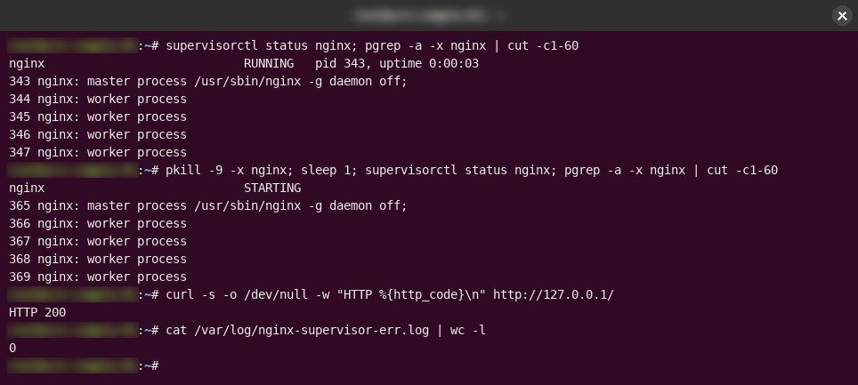

Sécurité Linux et systèmes
Sécuriser un serveur Linux en sept jours
Pendant mon stage, on m'a confié pour une semaine le serveur comptable d'une entreprise fictive. J'ai verrouillé les accès, mis en place des sauvegardes chiffrées, fait en sorte que le service web redémarre seul, et j'ai vérifié chaque étape par un vrai test.
- Période
- 25 – 31 août 2026 · 7 jours
- Statut
- Terminé · laboratoire de stage
- Type
- Projet de stage
Contexte
Mission « Excellence Cyber », menée pendant le volet administration système de mon stage chez FusionSoft Labs. J'y jouais un administrateur système junior prenant en charge le serveur du service comptable d'une entreprise fictive, avec un cahier des charges écrit : perte de données maximale (RPO) de 24 heures et temps de restauration (RTO) de 30 minutes.
Un serveur fraîchement installé, sans aucune protection. Chaque exigence (accès, séparation des données, sauvegardes, disponibilité, traçabilité) devait être satisfaite, puis prouvée par un test.
Mettre le serveur au niveau du cahier des charges en sept jours, prouver chaque protection par un test, et terminer la semaine par un auto-audit honnête.
Architecture
- Un serveur Ubuntu 24.04 dans un conteneur Docker, sur un réseau Docker isolé, à adresse fixe.
- Trois comptes nominatifs : deux administrateurs avec sudo, un compte de service sans shell interactif. Chacun a sa propre paire de clés ed25519 protégée par une passphrase.
- SSH sur un port non standard, connexion root et authentification par mot de passe désactivées ; UFW refuse tout le trafic entrant sauf SSH depuis le sous-réseau d'administration.
- Une tâche nocturne compresse les données comptables, les chiffre avec GPG (AES-256), supprime l'archive en clair et garde sept jours d'historique.
- Nginx supervisé par supervisord ; historique des connexions disponible avec last et lastlog.



Ce que j’ai fait
- Jour 1 : réseau isolé, comptes nominatifs, SSH par clés uniquement et pare-feu. Les clés publiques ont été déposées avec docker cp, car l'authentification par mot de passe n'a jamais été activée, même temporairement.
- Jours 2–3 : dossier comptable dédié avec le bit SGID ; script de sauvegarde chiffrée avec rotation sur sept jours, puis test de restauration complet.
- Jours 4–5 : redémarrage automatique du service web et traçabilité des connexions.
- Jour 6 : incident non annoncé (un client affirme avoir reçu une facture jamais commandée), investigué sans connaître la réponse.
- Jour 7 : auto-audit de chaque exigence et rapport de mission.
Ce qui a coincé, et comment je l’ai résolu
- UFW refusait de démarrer : un conteneur standard n'a pas les capacités noyau nécessaires. J'ai figé le travail avec docker commit et recréé le conteneur avec NET_ADMIN et NET_RAW, sans rien perdre.
- Pas de systemd ni de journald dans le conteneur, donc pas les outils habituels de redémarrage automatique et de journaux. J'ai utilisé supervisord pour le service, et last/lastlog pour l'historique des connexions, qui fonctionnent sans systemd.
Comment je l’ai vérifié
Ce que je voulais prouver, le test que j’ai fait, et ce que j’ai réellement observé.
| Ce que je voulais prouver | Le test | Ce que j’ai observé |
|---|---|---|
| root ne peut pas se connecter en SSH | Tentative de connexion root | Refusée |
| Connexion par clé uniquement | Connexion par clé, puis par mot de passe | Clé acceptée · mot de passe refusé |
| Les sauvegardes se restaurent dans le RTO | Restauration de la dernière archive chiffrée dans un dossier à part, puis comparaison fichier par fichier avec diff | Aucune différence entre la copie restaurée et les données réelles |
| Le service web se rétablit seul | Arrêt brutal des processus Nginx avec kill -9 | Relancé automatiquement par supervisord en moins d'une seconde, site de nouveau en ligne |
| La facture suspecte ne vient pas du serveur | Revue des connexions admin, tâches planifiées, journaux Nginx et dossier comptable | Aucune trace de compromission ; le serveur n'a aucune fonction de facturation. Hypothèse : hameçonnage visant le client |
Résultats
- Les sept contrôles de l'audit final sont conformes : root SSH bloqué, authentification par clé uniquement, pare-feu en refus par défaut, chiffrement au repos avec rotation sur sept jours, restauration testée et chronométrée, redémarrage automatique, historique des connexions consultable.
- Leçon retenue : ne rien trouver d'anormal dans une enquête est un résultat. Cela oriente vers une autre explication.
Ce que ça ne fait pas (encore)
- C'est un serveur simulé dans un conteneur, sans vrais utilisateurs ni vrai trafic.
- Après un redémarrage du conteneur, SSH, le pare-feu et supervisord doivent être relancés à la main.
- La passphrase des sauvegardes est stockée sur le serveur lui-même. En production, elle devrait être gérée par un coffre-fort de secrets externe.
- Les scripts du dépôt ont été reconstitués après la suppression du conteneur. Ils reproduisent les commandes documentées dans le rapport original, et le dépôt le précise.
Ce que j’améliorerais
- Ajouter un script de démarrage qui lance SSH, UFW et supervisord à chaque démarrage du conteneur
- Déplacer le secret des sauvegardes vers un gestionnaire de secrets
- Envoyer les journaux vers un collecteur central ou un SIEM au lieu de les lire sur l'hôte
- Automatiser l'audit final sous forme de contrôle de conformité rejouable
Preuves
- Dépôt : scripts et rapport de mission github.com/AGRO-Rachidi/linux-sysadmin-hardening